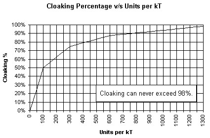

The Guts of Cloaking
More Guts
In order for matter to be cloaked, it requires a certain number of cloaking units per kT. When a ship is empty, its cloak provides the maximum amount of cloaking possible with that device. When the ship has cargo, the weight of the cargo reduces the number of cloak units per kT, and thus, the cloaking percentage.
Cloaking when the Ship is Empty
To determine the total number of cloaking units for an unladen ship, read the following table:
|
Cloaking Device |
Cloak Units/kT |
Max Cloaking % |
|
Transport Cloak* |
300 |
75 |
|
Stealth Cloak |
70 |
35 |
|
Super-Stealth Cloak |
140 |
55 |
|
Ultra-Stealth Cloak* |
540 |
85 |
|
Shadow Shield* |
70 |
35 |
|
Depleted Neutronium Armor* |
50 |
25 |
|
Chameleon Scanner* |
40 |
20 |
* Available only to races with the Super Stealth trait.
For example, an empty ship with a Stealth Cloak has 70 cloak units/kT, or 35% cloaking. By itself, the ship is visible to enemy scanners at only 35% of their maximum range.
When a cloaked ship has cargo, we need to recalculate the number of cloak units/kT available. Let's say this ship is a small freighter with a Quick Jump 5 engine, Tritanium Armor, and a Stealth Cloak. Empty, it weighs 91kT, with 70 cloak units/kT, and is cloaked at 35%. If you completely fill this particular freighter with cargo, it weighs 161kT. To calculate the new cloaking percentage:
|
1. Calculate the total number of cloaking units for the ship:
|
70 units/kT x 91kT = 6370 total cloak units |
|
2. Calculate the actual units/kT:
|
6370 / 161 kT = ~40 units/kT |
We can use the following chart to learn how much coverage a given number of cloaking units provides.

At 40 cloak units/kT, the loaded freighter in our example is now only 20% cloaked.
The following table provides exact numbers at certain points on the graph, allowing for more precise calculations.
100 units/kT 50% cloaked
300 units/kT 75% cloaked
600 units/kT 87.5% cloaked
1000 units/kT 93.75% cloaked
Cloaking for a Fleet with More than One Ship
In a fleet with more than one ship, uncloaked ships are counted as cargo when calculating units/kT. Let's place our empty freighter in a fleet with an empty scout that has a Quick Jump 5 engine, Laser, and a Bat Scanner, which weighs 15kT when empty. The entire fleet weighs 106kT, so traveling together, this fleet would be 6370 / 106 = ~60 units/kT, approximately 30% cloaked.
Super Stealth races do not count the cargo when determining cloaking.
The Effect of Multiple Tachyon Detectors
When a hull has more than one Tachyon Detector in its design, the effectiveness is calculated as follows:
95% ^ (SQRT(#_of_detectors) = Reduction in other player's cloaking
The Appendix of Cloaking
Here's pseudo code you can use to determine cloaking percentage from cloaking points per kT.
if points <= 100
percent = point/2
else
points = points-100
if points <= 200
percent = 50+_points/8
else
points = points-200
if points <= 312
percent = 75+_points/24
else
points = points-312
if points <= 512
percent = 88+_points/64
else if points < 768
percent = 96
else if points < 1000
percent = 97
else
percent = 98
end if
end if
end if
end if